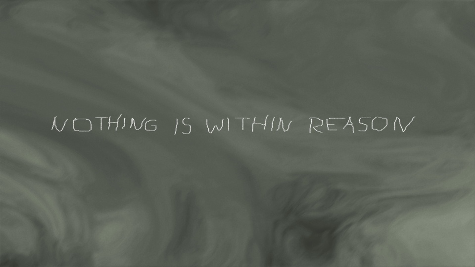
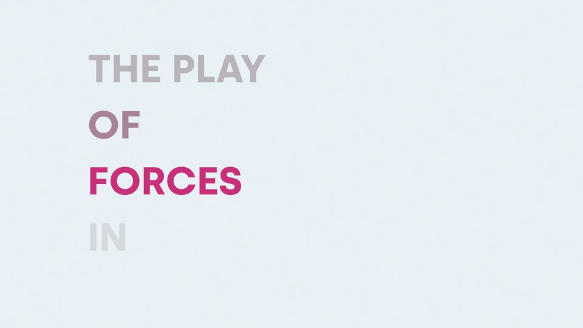
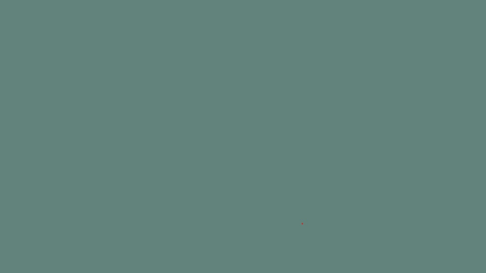
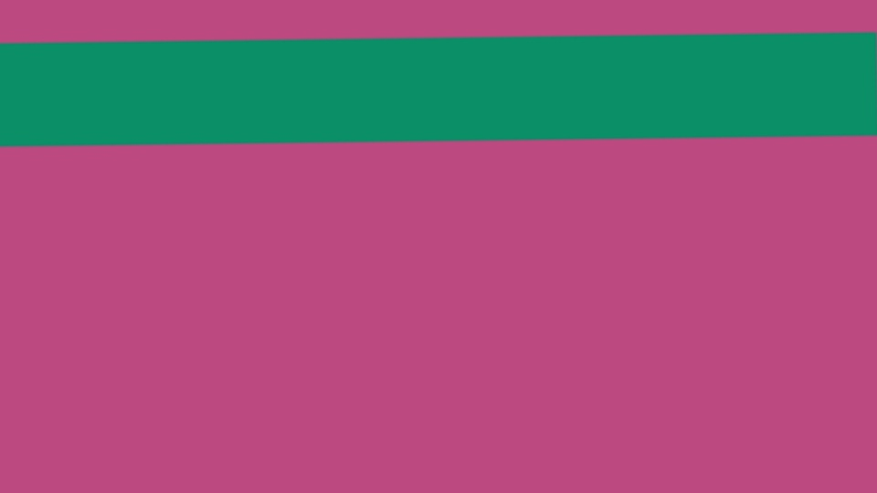

This site is dedicated to the work of
Przemysław SANECKI (IPA:
[pʃɛ̃ˈmɨswaf sanecki]),
an experimental Polish artist living and working in
Paris,
France.
The site mainly documents work created after 2014, that use computation as its primary medium, hence the domain name. However, technology does not determine the content, and his work is above all deeply rooted in critical art practice and stems from his experience as a performer.
Over the last few years, his activity has been focused on video works evoking
and continuing the tradition of materialist film.
Points of reference for his current practice are minimalism, neo-geo
and structural film.
Although the website is regularly updated, it may not yet contain the latest work. If you have any questions, please contact him at psanecki [at] this domain name [dot] org.
Abstract and structural video works
2019-ongoing
- NOTHING IS WITHIN REASON (2023)
-

- PRIMACY OF CONSTRUCTIVE METHODS OVER SUBJECTIVE IMAGINATION
-

- LISTERINE (2021)
-

- NORMAL (2021)
-

Previous works (2014-2016)
- Impossible Bodies (2016)
-
Recurent network, data mining, generative porn model, WebGL, browser based installation

- Queen of the Dream (2016)
-
DeepDream network, found footage, running time 8'08'', HD video installation

- Pure Capital (2016)
- FX data mining, realtime audiosynthesis & data visualisation AV performance
- The Storm that Shelters the Carnival (2016)
-
FX data mining, realtime audiosynthesis & data visualisation software installation

- The Source of the Work of Art (2014)
- Generative model of Martin Heidegger, real time CG, 2 channels software installation
Selected works from 2008-2014
Selected activity
- VIDEOFORMS 2023, Clermont-Ferrand, FR, 2023
- PikselX, Bergen, NO, 2022 Festiwal Permutacje, Konin, PL, 2019
-
MADAC, Madrid, ES, 2016
- Piksel 16, Bergen, NO, 2016
- residency, solo show, WASP, Bucharest, RO, 2016
- Amro, Linz, AT, 2016
- ADAF, Athens, GR, 2016
- Slingshot, Athens, US, 2015
- University of Arts Gallery, Poznan, PL, 2015
- Strefa Monotype 12, with Robert. B. Lisek, Julien Ottavi, CSW Zamek Ujazdowski, Warsaw, PL, 2013
- KARKOWSKI / LISEK / KUNO / GALARRETA / SANECKI / HEBERLE / WYSOCKA, concert, Poznan, PL, 2013 FFF***king Tokyo Brain Tour, with Zbigniew Karkowski, Robert. B. Lisek, et.al, various locations, PL, 2012
- Every Step Is Moving Me Up, Galeria Stereo, Poznan/Warsaw, PL, 2010
- LABORATORIUM, BWA Wroclaw, PL, 2009
- Heaven, solo show, Galeria Start, Warsaw, PL, 2009
- Against the wall, with Grupa KOT, Zachęta National Gallery of Art, Warsaw, PL, 2008
- 104. Common words, Sparwasser HQ, Berlin, DE, 2008
- Establishment, CSW Zamek Ujazdowski, Warsaw, PL, 2008
- Drop Point, performance, CSW Wyspa, Gdansk, PL, 2008
Education
- Doctor of Arts, University of Arts, Poznan, PL, 2014
- Master of Arts, Academy of Fine Arts, Wroclaw, PL, 2005